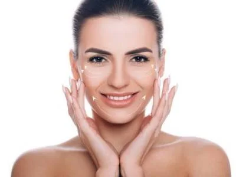
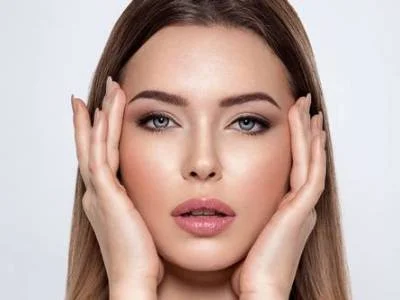
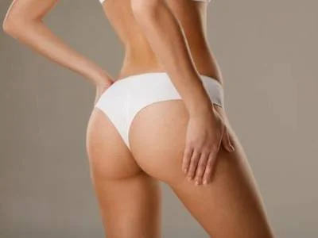
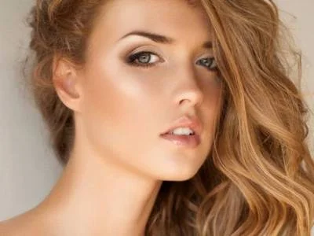
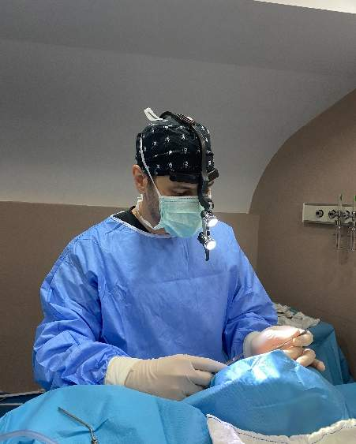
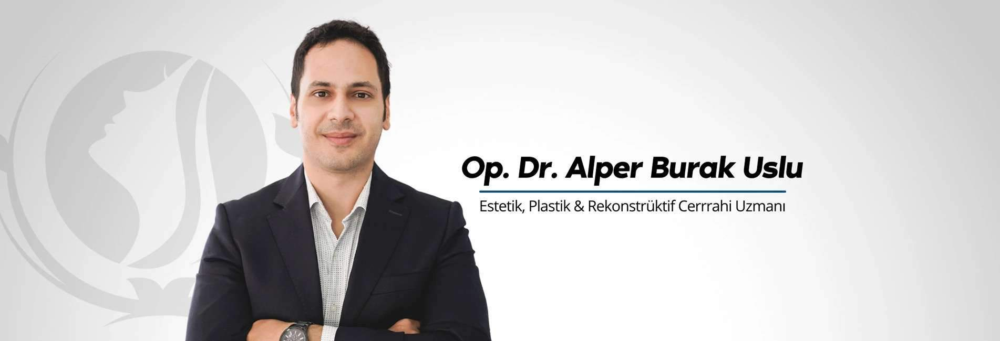

Op. Dr. Alper
Burak Uslu
A scientific approach to aesthetic surgery, natural results and personalized planning.
Leading the Way in Aesthetic Surgery
We aim to help every patient reach the most suitable, natural result through comprehensive, artistic and minimally invasive solutions.
About
Plastic, Reconstructive and Aesthetic Surgery Specialist
Dr. Alper Burak Uslu was born in Ankara in 1988. He completed his primary, middle and high school education at Ankara Private Tevfik Fikret Schools and was awarded the “Baccalauréat Français” (French high school graduation diploma). Although he was accepted from Montpellier University Faculty of Medicine, which is considered the oldest medical school in the world, he started his medical education at Ankara Başkent University Faculty of Medicine in 2005 and graduated in 2011 and was awarded the title of “Doctor of Medicine”.
He showed high success in the medical specialty exam and was placed in Ankara Numune Training and Research Hospital’s (ANH) Plastic, Reconstructive and Aesthetic Surgery department in 2012 and completed his specialty training in the same clinic, in 2017. During these years, he attended many congresses and trainings. In 2014, he received microsurgery training at Goethe Universität Frankfurt, Germany. During his residency, he performed numerous operations in the fields of Aesthetic surgery, Hand surgery, Reconstructive microsurgery, Oral & maxillofacial surgery, Burns, Head & Neck cancer surgery and reconstructions, lower extremity trauma and reconstructions. In 2017, he participated in the two-stage written and oral qualification exams organized by the Turkish Society of Plastic, Reconstructive and Aesthetic Surgery and the European Board of Plastic Surgery (EBOPRAS) in 2018, and successfully passed them on the first attempt and received the Turkish and European Board Qualification.
Aesthetic Surgery Procedures

Endoscopic Face Lift
Endoscopic face lift Turkey is an operation performed to tighten facial tissues with closed surgical methods, thus creating a youthful facial appearance…
Procedures
Eyelid Aesthetics
Eyelid aesthetics Turkey is an aesthetic operation performed to eliminate saggy or baggy eyelids and to create an appearance that makes the individuals…
ProceduresArm Lift (Brachioplasty Surgery)
Arm lift Turkey is an advanced surgical operation performed to tighten and slim the arms. In particular, sagging may occur in the arms due to factors such…
Procedures
BBL
BBL Turkey BBL Turkey is an aesthetic surgery technique performed with special fat transfer procedures to give the hips an attractive appearance. Many…
Procedures
Breast Augmentation
Breast augmentation Turkey is a special aesthetic operation performed to enlarge and shape the breasts. The size and shape of the breasts are extremely…
Procedures
Breast Lift Surgery
Breast lift surgery Turkey is an aesthetic operation performed to rearrange the breast tissues, shape the breasts and give the breasts a lifted…
Procedures
Botox
Botox Turkey is a special application performed to eliminate skin wrinkles and give the skin a smooth and youthful appearance. Under the facial skin there…
ProceduresHow We Proceed
Consultation
We listen to your expectations, perform a face/body analysis and explain the options clearly.
Personalized Plan
A realistic, personalized plan is prepared according to your anatomy and goals.
Surgery & Follow-up
The procedure is performed; we stay by your side with regular check-ups during recovery.


Op. Dr. Alper
Burak Uslu
Plastic, Reconstructive and Aesthetic Surgery · M.D, FEBOPRAS
International Memberships & Certificates
Active member of international and national plastic surgery associations.
Book AppointmentKnowing What to Expect
Scientific Approach
An evidence-based surgical philosophy, continuously updated with current literature.
Natural Results
Natural-looking outcomes that respect facial and body harmony, free of exaggeration.
Personalized Plan
Realistic, individual planning based on each patient's anatomy and expectations.
Ethics and Trust
Transparent information, realistic expectation management and patient safety first.